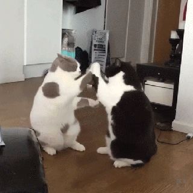

Image 1: Animated GIF of Funny Cats
Media Description
This is an animation of two cats just being silly and playing with each other.
It is repeating because of the media format.
File Type Information
This type of file is called a GIF (Graphics Interchange Format) and its extension is expressed as .gif at the end of file names.
They are a raster file format that combines a sequence of digital images to create short animations.
Why I Chose This Image
I chose this image because I thought it was funny and that others may enjoy it too.
I also own two cats, so I relate with their random, playful nature a lot.